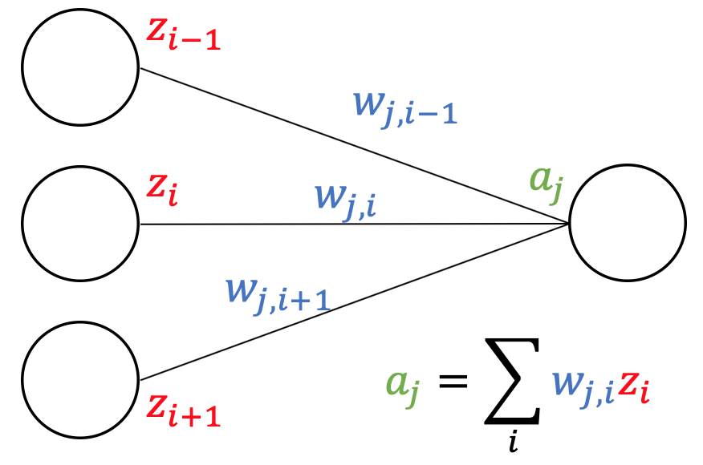
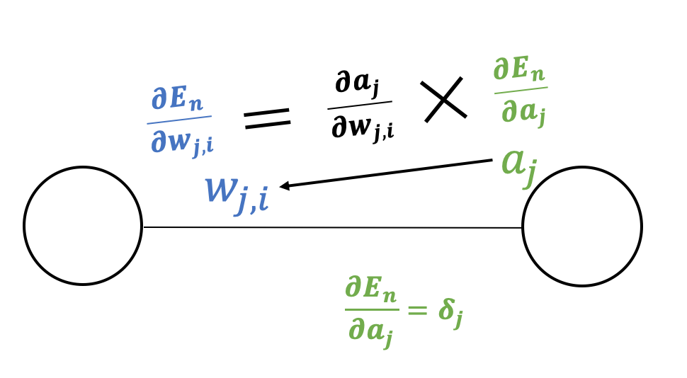
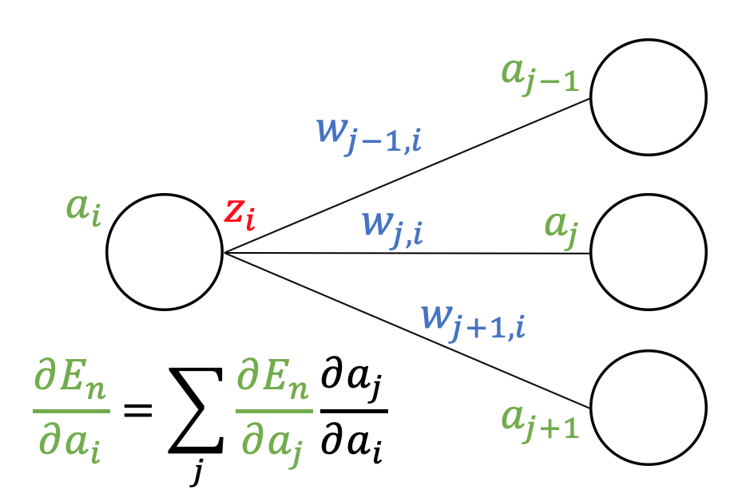
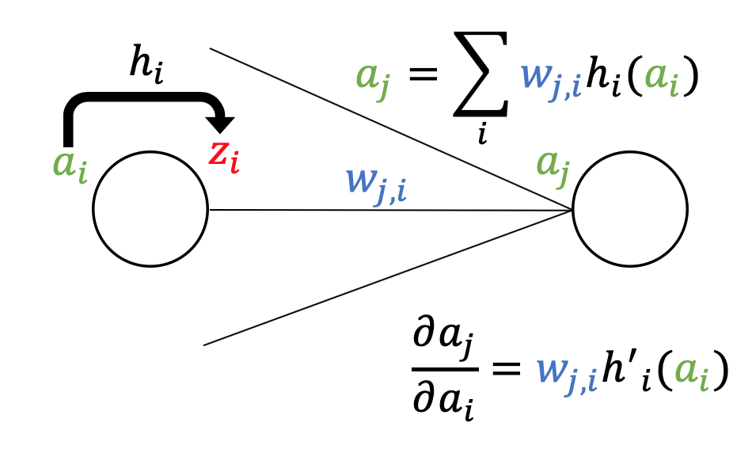

<!DOCTYPE html>
<html lang="ja">
    <head>
        <meta charset="utf-8">
        <meta http-equiv="X-UA-Compatible" content="IE=edge">
        <meta name="viewport" content="width=device-width, initial-scale=1.0">
        <meta name="author" content="Shuto" />

        <meta property="og:type" content="article" />
        <meta name="twitter:card" content="summary">

<meta name="keywords" content="PRML, PRML, " />
<meta property="og:image" content="https://gaussian37.github.io/assets/img/ml/prml/prml.png"/>

<meta property="og:title" content="PRML §5 Neural Networks "/>
<meta property="og:url" content="https://iwasakishuto.github.io/study/notes/PRML-chap5.html" />
<meta property="og:description" content="Neural Networks" />
<meta property="og:site_name" content="My Notes" />
<meta property="og:article:author" content="Shuto" />
<meta property="og:article:published_time" content="2019-06-19T00:00:00+09:00" />
<meta property="og:article:modified_time" content="2019-06-19T00:00:00+09:00" />
<meta name="twitter:title" content="PRML §5 Neural Networks ">
<meta name="twitter:description" content="Neural Networks">

        <title>PRML §5 Neural Networks  · My Notes
</title>
        <link href="//netdna.bootstrapcdn.com/twitter-bootstrap/2.3.2/css/bootstrap-combined.min.css" rel="stylesheet">
        <link href="//netdna.bootstrapcdn.com/font-awesome/4.7.0/css/font-awesome.css" rel="stylesheet">
        <link rel="stylesheet" type="text/css" href="https://iwasakishuto.github.io/study/notes/theme/css/pygments.css" media="screen">
        <link rel="stylesheet" type="text/css" href="https://iwasakishuto.github.io/study/notes/theme/tipuesearch/tipuesearch.css" media="screen">
        <link rel="stylesheet" type="text/css" href="https://iwasakishuto.github.io/study/notes/theme/css/elegant.css" media="screen">
        <link rel="stylesheet" type="text/css" href="https://iwasakishuto.github.io/study/notes/theme/css/admonition.css" media="screen">
        <!---->
        <link rel="apple-touch-icon" sizes="152x152" href="https://iwasakishuto.github.io/study/notes/theme/img/icon/apple-touch-icon-152x152.png" type="image/png" />


        <!-- Use fontawesome Icon -->
        <link rel="stylesheet" href="https://use.fontawesome.com/releases/v5.7.0/css/all.css" integrity="sha384-lZN37f5QGtY3VHgisS14W3ExzMWZxybE1SJSEsQp9S+oqd12jhcu+A56Ebc1zFSJ" crossorigin="anonymous">
        <!-- Syntax highlight -->
        <link rel="stylesheet" href="https://cdnjs.cloudflare.com/ajax/libs/highlight.js/8.6/styles/github.min.css">
        <!-- Custom CSS -->
        <link rel="stylesheet" type="text/css" href="https://iwasakishuto.github.io/study/notes/theme/css/custom.css" media="screen">
        <script src="https://cdnjs.cloudflare.com/ajax/libs/highlight.js/8.6/highlight.min.js"></script>
        <script>hljs.initHighlightingOnLoad();</script>
        <!-- LaTex -->
        <!-- Github env -->
        <!--<script type="text/javascript" async src="//cdn.mathjax.org/mathjax/latest/MathJax.js?config=TeX-MML-AM_CHTML"></script>-->
        <script async src="https://cdnjs.cloudflare.com/ajax/libs/mathjax/2.7.0/MathJax.js?config=TeX-AMS_CHTML"></script>
        <script type="text/x-mathjax-config">
        	MathJax.Hub.Config({
        		tex2jax: {
        			inlineMath: [ ['$','$'], ["\\(","\\)"] ],
        			displayMath: [ ['$$','$$'], ["\\[","\\]"] ]
        		}
        	});
        </script>
        <!-- Mermaid -->
        <script src="https://unpkg.com/mermaid/dist/mermaid.min.js" charset="UTF-8"></script>
        <script>
          mermaid.initialize({
            startOnLoad:true
          });
        </script>
    </head>
    <body>
        <div id="content-sans-footer">
        <div class="navbar navbar-static-top">
            <div class="navbar-inner">
                <div class="container-fluid">
                    <a class="btn btn-navbar" data-toggle="collapse" data-target=".nav-collapse">
                        <span class="icon-bar"></span>
                        <span class="icon-bar"></span>
                        <span class="icon-bar"></span>
                    </a>
                    <a class="brand" href="https://iwasakishuto.github.io/study/notes"><span class=site-name style="color: #80273F;"><i class="fa fa-book"></i> My Notes</span></a>
                    <!--
                    <a class="brand" href="https://iwasakishuto.github.io/study/notes/"><span class=site-name style="margin-left:auto; margin-right:auto;"><i class="fas fa-book-reader"></i>My Notes</span></a>
                    -->
                    <div class="nav-collapse collapse">
                        <ul class="nav pull-right top-menu">
                            <li ><a href="https://iwasakishuto.github.io/"><i class="fas fa-home"></i>Portfolio Top</a></li>
                            <li ><a href="https://iwasakishuto.github.io/study/notes/categories"><i class="fa fa-list-alt"></i> Categories</a></li>
                            <li ><a href="https://iwasakishuto.github.io/study/notes/tags"><i class="fa fa-tags"></i> Tags</a></li>
                            <li ><a href="https://iwasakishuto.github.io/study/notes/archives"><i class="fa fa-folder-open"></i> Archives</a></li>
                            <li><form class="navbar-search" action="https://iwasakishuto.github.io/study/notes/search.html" onsubmit="return validateForm(this.elements['q'].value);"> <input type="text" class="search-query" placeholder="Search" name="q" id="tipue_search_input"></form></li>
                        </ul>
                    </div>
                </div>
            </div>
        </div>
        <div class="container-fluid">
            <div class="row-fluid">
                <div class="span1"></div>
                <div class="span10">
<article itemscope>
<div class="row-fluid">
    <header class="page-header span10 offset2">
    <h1><a href="https://iwasakishuto.github.io/study/notes/PRML-chap5.html"> PRML §5 Neural Networks  </a></h1>
    </header>
</div>

<div class="row-fluid">
        <div class="span8 offset2 article-content">

            
            <h1>§5 Neural Networks</h1>
<h2>単純パーセプロトン(perceptron)</h2>
<p>ニューラルネットワークは<b>多数の素子（パーセプトロン）の集まり</b>で表現されます。そこで、まずは一つ一つの素子を見ていきます。</p>
<p>一つの素子は以下の図のように表され、入力を受け取り、<b>その値（の和）がある閾値 <span class="math">\(\theta\)</span> を超えたら発火して出力し、<span class="math">\(\theta\)</span> 以下だったら出力しない</b>という性質を持ちます。</p>
<p></p>
<p>数学的に記述すると、</p>
<ul>
<li>重みパラメータ：<span class="math">\(w_0,w_1,\ldots,w_m\)</span></li>
<li>活性化関数：<span class="math">\(h\)</span></li>
</ul>
<p>から構成され、以下のような関数を表します。</p>
<div class="math">$$f(x_1,x_2,\ldots,x_m) = h(w_1x_1+w_2x_2+\cdots+w_mx_m+w_0)$$</div>
<p>この時 <span class="math">\(w_0\)</span> は<font color="red"><b>バイアスパラメータ(bias parameter)</b></font>と呼ばれ、<b>関数を平行移動させる</b>役割を果たします。</p>
<h3>活性化関数(activation function)</h3>
<p><font color="red"><b>「ある閾値 <span class="math">\(\theta\)</span> を超えたら発火して出力し、<span class="math">\(\theta\)</span> 以下だったら出力しない」</b></font>という神経の性質を表現するため、以下の<b>ヘヴィサイド関数(Heaviside function)</b>などが利用されます。</p>
<div class="math">$$h(a) = \left\{\begin{array}{cc}0 &amp; (\theta &lt; 0) \\1 &amp; (\theta &gt; 0)\end{array}\right.$$</div>
<p>この性質は表したい能力を如実に表していますが、<b>不連続であり扱いづらい</b>ため、<b>ロジスティックシグモイド関数</b></p>
<div class="math">$$h(a) = \frac{1}{1+\exp(-a)}\qquad(4.59)$$</div>
<p>や、それと等価な能力を持つ</p>
<ul>
<li><b>ハイパボリックタンジェント関数</b>
<div class="math">$$\begin{aligned}h(a) &amp;= \tanh (a)\\&amp;=\frac{e^a-e^{-1}}{e^1+e^{-1}}
&amp;(5.59)\end{aligned}$$</div>
</li>
<li><b>ソフトマックス関数</b>
<div class="math">$$h(\mathbf{a}) = \frac{\exp(a_i)}{\sum_j \exp(a_i)}\qquad (4.63)$$</div>
</li>
</ul>
<p>などが用いられます。</p>
<h2>多層パーセプロトン(Multilayer Perceptron)</h2>
<p>それでは、一つの単子（単純パーセプロトン）を繋げて２層のパーセプトロンを作って見ます。なお、<b>２層以上のパーセプトロンをニューラルネットワーク</b>と言います。</p>
<p>例えば１層目に <span class="math">\(m\)</span> 個の素子を用意し、入力が <span class="math">\(D\)</span> 次元の場合、関数で表すと</p>
<div class="math">$$y = h_2\left(\sum_{i=0}^{m} w^{(2)}_ih_1\left(\sum_{j=0}^{D}w^{(1)}_{ij} x_j\right)\right)\qquad(5.9)$$</div>
<p>となります。</p>
<p></p>
<p>ただし、それぞれの記号の意味は以下の通りです。</p>
<table>
<thead>
<tr>
<th align="center">記号</th>
<th align="left">意味</th>
</tr>
</thead>
<tbody>
<tr>
<td align="center"><span class="math">\(w^{(1)}_{ij}\)</span></td>
<td align="left">１層目の <span class="math">\(i\)</span> 番目の素子の入力 <span class="math">\(j\)</span> の重み</td>
</tr>
<tr>
<td align="center"><span class="math">\(w^{(2)}_i\)</span></td>
<td align="left">２層目の素子の入力 <span class="math">\(i\)</span> の重み</td>
</tr>
<tr>
<td align="center"><span class="math">\(h_1,h_2\)</span></td>
<td align="left">それぞれの層の活性化関数</td>
</tr>
</tbody>
</table>
<h3>多層にする意味</h3>
<p>この時何が起こるのでしょうか？ 線形識別モデルと先ほど導出した２層のパーセプトロンを比べて見ます。</p>
<ul>
<li>線形識別モデル
<div class="math">$$ y=f\left(\sum_i w_i\color{red}\phi_i(\mathbf{x})\right) \qquad(5.1)$$</div>
</li>
<li>２層のパーセプトロン
<div class="math">$$ y = h_2\left(\sum_{i=0}^{m} w^{(2)}_i\color{red}h_1\left(\sum_{j=0}^{D}w^{(1)}_{ij} x_j\right)\right)\qquad(5.9)$$</div>
</li>
</ul>
<p>これより、基底 <span class="math">\(\phi_i(\mathbf{x})\)</span> が <span class="math">\(\displaystyle h_1\left(\sum_{j=0}^{D}w^{(1)}_{ij} x_j\right)\)</span> に置き換わっていることがわかります。</p>
<p>どういうことかというと、<font color="red"><b>今まで固定されていた基底関数が、多層になることで適応的に変動するようになる</b></font>ということです。</p>
<p>これより、<b>十分大きな <span class="math">\(m\)</span> をとった多層パーセプトロンは、任意の関数を任意の精度で近似することができる</b>という性質を持ちます。</p>
<h2>誤差逆伝播法(back propagation)</h2>
<p>ニューラルネットワークについて語る上で避けては通れなく、理解が難しいのが<font color="red"><b>誤差逆伝播法（back propagation）</b></font>です。</p>
<p>しかし、誤差逆伝播法とはニューラルネットワークを訓練する際に用いられる効率的な計算方法のことで、<font color="red"><b>「ただの合成関数の微分則」</b></font>です。</p>
<ul>
<li>素子 <span class="math">\(i\)</span> の出力を <span class="math">\(z_i\)</span></li>
<li>素子 <span class="math">\(j\)</span> への入力和を <span class="math">\(a_j\)</span></li>
</ul>
<p>として、説明します。</p>
<p>ここで、<b>ニューラルネットワークの訓練</b>とは、<b>「訓練データの出力と正解の誤差 <span class="math">\(E_n(\mathbf{w})\)</span> を最小化すること」</b>です。</p>
<p>したがって、学習のプロセスにおいては<b>「素子 <span class="math">\(i\)</span> から素子 <span class="math">\(j\)</span> への接続の重みを <span class="math">\(w_{ji}\)</span> として、 全ての <span class="math">\(i,j\)</span> の組合せ（＝全ノードの重み）に対して$ \frac{\partial E_n}{\partial w_{ji}} $を計算すること」</b>が目標となります。</p>
<p></p>
<p>すると、上の図のように<b>「<span class="math">\(E_n\)</span> は <span class="math">\(a_j\)</span> を介してのみ <span class="math">\(w_{ji}\)</span> に依存する」（＝ <span class="math">\(w_{ji}\)</span> が変化すると <span class="math">\(a_j\)</span> が変化し、それが <span class="math">\(E_n\)</span> に影響を及ぼす）</b>ことに注意すれば</p>
<div class="math">$$ \frac{\partial E_n}{\partial w_{ji}} = \frac{\partial E_n}{\partial a_j}\frac{\partial a_j}{\partial w_{ji}}\qquad(5.50)$$</div>
<p>となります。</p>
<p>さらに、<span class="math">\(\delta_j = \partial E_n/\partial a_j\)</span> と書くことにし、これを<font color="red"><b>誤差</b></font>と呼びます。</p>
<p></p>
<p>続いて、<span class="math">\(\delta_i\)</span> について考えると、<span class="math">\(E_n\)</span> は素子 <span class="math">\(i\)</span> の出力を受け取る素子 <span class="math">\(j\)</span> の入力 <span class="math">\(a_j\)</span> を介して <span class="math">\(a_i\)</span> に依存するので、合成微分則より</p>
<div class="math">$$ \delta_i = \frac{\partial E_n}{\partial a_i} = \sum_j \frac{\partial E_n}{\partial a_j}\frac{\partial a_j}{\partial a_i} = \sum_j\delta_j\frac{\partial a_j}{\partial a_i}\qquad(5.55)$$</div>
<p>となります。（下図参照）</p>
<p></p>
<p>さらに、素子 <span class="math">\(i\)</span> の活性化関数を <span class="math">\(h_i\)</span> とすると、</p>
<div class="math">$$a_j = \sum_i w_{ji} h_i(a_i)\qquad(5.48)$$</div>
<p>だった（素子 <span class="math">\(i\)</span> への入力和を活性化関数に通しそれぞれに重み <span class="math">\(w_{ji}\)</span> をかけた和を素子 <span class="math">\(j\)</span> に伝える）ので、</p>
<div class="math">$$ \frac{\partial a_j}{\partial a_i} = w_{ji} h_i'(a_i)$$</div>
<p>となります。</p>
<p></p>
<p>ここまでをまとめると、誤差 <span class="math">\(\delta_i\)</span> の逆伝播公式</p>
<div class="math">$$ \delta_i = h_i'(a_i) \sum_j w_{ji}\delta_j\qquad(5.56)$$</div>
<p>が得られます。</p>
<p>また、ネットワークの出力部における <span class="math">\(\delta\)</span> の値は直接計算する事が出来るので、そこから逆にネットワークを辿りながら各 <span class="math">\(\delta\)</span> を計算する事が可能になります。</p>
<p>このネットワークを逆に辿る過程で各 <span class="math">\(w_{ji}\)</span> に対する <span class="math">\(W\)</span> 個の偏導関数を一回の誤差伝播で求めてしまう事が出来るので、<b>大変効率の良いアルゴリズム</b>となっています。</p>
<div style="border: solid 1.5px #80160e;padding: 0.5em 1em; margin: 2em 0;">
  <h3>【まとめ】</h3>
  <ol>
    <li>データ $\mathbf{x}_n$ を入力した時の、各素子への入力 $a_i$ 出力 $z_i$ を求める</li>
    <li>ネットワークの出力部における誤差 $\delta_i$ を計算する</li>
    <li>逆伝播公式を利用して各素子における $\delta_i$ を計算する。
    $$\delta_i = h_i'(a_i) \sum_j w_{ji}\delta_j$$</li>
    <li>以下を利用して必要な偏微分係数を求める。
    $$\frac{\partial E_n}{\partial w_{ji}} = \delta_j z_i$$</li>
  </ol>
</div>

<h2>実装例</h2>
<p>ここで、<b>ニューラルネットワークが基底関数の形を変化させて学習データにフィッティングしていることが確認できるプログラム</b>を用意しました。（<font color="red"><b><a href="theme/downloads/python/NeuralNetwork.py" download>ここ</a></b></font>からダウンロードができます。また、最後に全体のコードを載せておきます。）</p>
<ul>
<li><span class="math">\(y = x^2\)</span></li>
<li><span class="math">\(y = \sin x\)</span></li>
<li><span class="math">\(y = |x|\)</span></li>
</ul>
<p>を、３つの基底関数を使って表現することができることが確認できると思います。（学習において最急降下法を用いているため、シンプルでわかりやすい反面計算に多少時間がかかります。<b>準ニュートン法</b>や<b>直線探索法</b>、<b>BFGC公式</b>を用いることで計算量を抑えることができます。）</p>
<p><font color="red"><b>「隠れ層の素子が十分にあるならば、ニューラルネットワークは任意の（厳密には、定義域が有界で閉じている）関数を任意の精度で（誤差を指定すれば調整可能）近似できる」</b></font>ことが知られています。</p>
<p>しかし、当然ながら素子を増やせばパラメータの数は膨大に増え、うまく学習ができないこともあります。</p>
<p>また、過学習を起こしてしまう可能性も高くなるので<b>一概に素子を増やせば性能が上がるとも言い切れません。</b></p>
<h2>ヤコビ行列(Jacobian matrix)</h2>
<p>ニューラルネットワークを <span class="math">\(\mathbf{y} = f(\mathbf{x},\mathbf{w})\)</span> と表します。</p>
<p>ここで、実際のデータ分析において<font color="red"><b>「ある変数 <span class="math">\(x_j\)</span> が予測 <span class="math">\(y_i\)</span> にどれぐらい影響を及ぼしているのか？」</b></font>を知りたいことがあります。</p>
<p>これは、<span class="math">\(\frac{\partial y_i}{\partial x_j}\)</span> という微分係数で表されます。ここで、<span class="math">\(J_{ij} = \frac{\partial y_i}{\partial x_j}\)</span> を <span class="math">\((i,j)\)</span> 成分にもつ行列は<font color="red"><b>ヤコビ行列 (Jacobian matrix)</b></font>と呼ばれます。</p>
<p>この時、<b>ヤコビ行列は先ほどの誤差逆伝播法と同じ考え方を利用することで、簡単に調べることができます。</b></p>
<p>ただし、</p>
<ul>
<li>ヤコビ行列が表すのは<b>「入力の変動に対する出力の変動」</b></li>
<li>学習の際に利用したのは<b>「重みの変動に対する出力の変動」</b></li>
</ul>
<p>であることには注意してください。</p>
<h2>実装コード</h2>
<p>実行することで、ニューラルネットワークが基底関数の形を変化させて学習データにフィッティングしていることが確認できるかと思います。</p>
<div class="highlight"><pre><span></span><span class="c1"># coding: utf-8</span>
<span class="kn">import</span> <span class="nn">numpy</span> <span class="kn">as</span> <span class="nn">np</span>
<span class="kn">from</span> <span class="nn">scipy</span> <span class="kn">import</span> <span class="n">linalg</span> <span class="k">as</span> <span class="n">LA</span>
<span class="kn">import</span> <span class="nn">matplotlib.pyplot</span> <span class="kn">as</span> <span class="nn">plt</span>

<span class="c1">#=== データ数 ===</span>
<span class="n">N</span> <span class="o">=</span> <span class="mi">50</span>

<span class="c1">#=== ニューラルネットワークの形 ===</span>
<span class="n">D</span> <span class="o">=</span> <span class="mi">1</span>   <span class="c1"># 入力の次元(x座標)</span>
<span class="n">M</span> <span class="o">=</span> <span class="mi">30</span>  <span class="c1"># 隠れ層の数(基底関数の数)</span>
<span class="n">K</span> <span class="o">=</span> <span class="mi">1</span>   <span class="c1"># 出力層の数(y座表)</span>

<span class="c1">#=== 重みパラメータ ===</span>
<span class="n">W1</span>  <span class="o">=</span> <span class="n">M</span><span class="o">*</span><span class="p">(</span><span class="n">D</span><span class="o">+</span><span class="mi">1</span><span class="p">)</span> <span class="c1"># 第1層の重みパラメータ数(ダミー変数を足す) # 隠れ層の重みは M*(D+1) 行列w1で表現</span>
<span class="n">W2</span>  <span class="o">=</span> <span class="n">K</span><span class="o">*</span><span class="p">(</span><span class="n">M</span><span class="o">+</span><span class="mi">1</span><span class="p">)</span> <span class="c1"># 第2層の重みパラメータ数(ダミー変数を足す) # 出力層の重みは K*(M+1) 行列w2で表現</span>
<span class="n">W</span>   <span class="o">=</span> <span class="n">W1</span> <span class="o">+</span> <span class="n">W2</span> <span class="c1"># 重みパラメータ数</span>

<span class="c1">#=== 最急降下法のパラメータ ===</span>
<span class="n">ALPHA</span> <span class="o">=</span> <span class="mf">0.01</span>      <span class="c1"># 最急降下法の勾配係数</span>
<span class="n">ITER_MAX</span> <span class="o">=</span> <span class="mi">5000</span>   <span class="c1"># 最大反復回数</span>
<span class="n">ITER_EPS</span> <span class="o">=</span> <span class="mf">1.0e-4</span> <span class="c1"># 勾配のノルムがこれかになったら停止</span>

<span class="k">def</span> <span class="nf">forward</span><span class="p">(</span><span class="n">x</span><span class="p">,</span> <span class="n">w1</span><span class="p">,</span> <span class="n">w2</span><span class="p">):</span>
    <span class="sd">&quot;&quot;&quot;</span>
<span class="sd">    関数の概要　：順伝播を計算する。</span>
<span class="sd">    @param x  ：入力</span>
<span class="sd">    @param w1 ：隠れ層の重み w1[i, j] はj番目の入力と隠れ層のi番目の素子の間の重み。</span>
<span class="sd">    @param w2 ：出力層の重み w2[i, j] は隠れ層のj番目素子と出力層のi番目の素子の間の重み。</span>
<span class="sd">    @return a1：a1[i]: 隠れ層iへの入力</span>
<span class="sd">    @return a2：a2[i]: 出力層iへの入力</span>
<span class="sd">    &quot;&quot;&quot;</span>
    <span class="n">a1</span> <span class="o">=</span> <span class="n">w1</span><span class="o">.</span><span class="n">dot</span><span class="p">(</span><span class="n">np</span><span class="o">.</span><span class="n">append</span><span class="p">(</span><span class="n">x</span><span class="p">,</span> <span class="mi">1</span><span class="p">))</span>           <span class="c1"># 隠れ層の入力を計算</span>
    <span class="n">a2</span> <span class="o">=</span> <span class="n">w2</span><span class="o">.</span><span class="n">dot</span><span class="p">(</span><span class="n">np</span><span class="o">.</span><span class="n">append</span><span class="p">(</span><span class="n">np</span><span class="o">.</span><span class="n">tanh</span><span class="p">(</span><span class="n">a1</span><span class="p">),</span> <span class="mi">1</span><span class="p">))</span> <span class="c1"># 出力層の入力を計算</span>
    <span class="k">return</span> <span class="p">(</span><span class="n">a1</span><span class="p">,</span> <span class="n">a2</span><span class="p">)</span>

<span class="k">def</span> <span class="nf">backprop</span><span class="p">(</span><span class="n">a1</span><span class="p">,</span> <span class="n">a2</span><span class="p">,</span> <span class="n">w1</span><span class="p">,</span> <span class="n">w2</span><span class="p">,</span> <span class="n">delta2</span><span class="p">):</span>
    <span class="sd">&quot;&quot;&quot;</span>
<span class="sd">    関数の概要：誤差逆伝播を計算する。 h&#39;(a) * Σw*δ</span>
<span class="sd">    @param a1, a2：各層への入力</span>
<span class="sd">    @param w1, w2：各層の重み(w2[:,0:M]で、バイアス項の重みを除く。)</span>
<span class="sd">    @param delta2：出力層の誤差</span>
<span class="sd">    @return 隠れ層の誤差</span>
<span class="sd">    &quot;&quot;&quot;</span> <span class="c1"># 逆伝播の場合は、重みのベクトルを転地する必要があることに注意！！</span>
    <span class="k">return</span> <span class="p">((</span><span class="mi">1</span><span class="o">-</span> <span class="n">np</span><span class="o">.</span><span class="n">tanh</span><span class="p">(</span><span class="n">a1</span><span class="p">)</span><span class="o">**</span><span class="mi">2</span><span class="p">)</span><span class="o">*</span><span class="p">(</span><span class="n">w2</span><span class="p">[:,</span><span class="mi">0</span><span class="p">:</span><span class="n">M</span><span class="p">]</span><span class="o">.</span><span class="n">T</span><span class="p">)</span><span class="o">.</span><span class="n">dot</span><span class="p">(</span><span class="n">delta2</span><span class="p">))</span> <span class="c1"># 隠れ層の誤差</span>

<span class="c1"># 偏微分係数の計算</span>
<span class="k">def</span> <span class="nf">diffcoef</span><span class="p">(</span><span class="n">x</span><span class="p">,</span> <span class="n">a1</span><span class="p">,</span> <span class="n">a2</span><span class="p">,</span> <span class="n">w1</span><span class="p">,</span> <span class="n">w2</span><span class="p">,</span> <span class="n">delta2</span><span class="p">):</span>
    <span class="sd">&quot;&quot;&quot;</span>
<span class="sd">    関数の概要：偏微分係数を計算する</span>
<span class="sd">    @param x     ：入力</span>
<span class="sd">    @param a1,a2 ：隠れ層、出力層への入力</span>
<span class="sd">    @param w1,w2 ：隠れ層・出力層の重み</span>
<span class="sd">    @param delta2：出力結果の誤差</span>
<span class="sd">    &quot;&quot;&quot;</span>
    <span class="n">delta1</span> <span class="o">=</span> <span class="n">backprop</span><span class="p">(</span><span class="n">a1</span><span class="p">,</span> <span class="n">a2</span><span class="p">,</span> <span class="n">w1</span><span class="p">,</span> <span class="n">w2</span><span class="p">,</span> <span class="n">delta2</span><span class="p">)</span>
    <span class="n">diff1</span> <span class="o">=</span> <span class="n">np</span><span class="o">.</span><span class="n">outer</span><span class="p">(</span><span class="n">delta1</span><span class="p">,</span> <span class="n">np</span><span class="o">.</span><span class="n">append</span><span class="p">(</span><span class="n">x</span><span class="p">,</span> <span class="mi">1</span><span class="p">))</span>
    <span class="n">diff2</span> <span class="o">=</span> <span class="n">np</span><span class="o">.</span><span class="n">outer</span><span class="p">(</span><span class="n">delta2</span><span class="p">,</span> <span class="n">np</span><span class="o">.</span><span class="n">append</span><span class="p">(</span><span class="n">np</span><span class="o">.</span><span class="n">tanh</span><span class="p">(</span><span class="n">a1</span><span class="p">),</span> <span class="mi">1</span><span class="p">))</span>
    <span class="k">return</span> <span class="p">(</span><span class="n">diff1</span><span class="p">,</span> <span class="n">diff2</span><span class="p">)</span>

<span class="k">def</span> <span class="nf">steepest_step</span><span class="p">(</span><span class="n">x</span><span class="p">,</span> <span class="n">t</span><span class="p">,</span> <span class="n">w1</span><span class="p">,</span> <span class="n">w2</span><span class="p">):</span>
    <span class="sd">&quot;&quot;&quot;</span>
<span class="sd">    関数の概要：最急降下法のステップ方向を計算する。</span>
<span class="sd">    @param x    ：入力</span>
<span class="sd">    @param t    ：正解</span>
<span class="sd">    @param w1,w2：隠れ層・出力層の重み</span>
<span class="sd">    @return diff：ステップ方向</span>
<span class="sd">    &quot;&quot;&quot;</span>
    <span class="n">diff1</span> <span class="o">=</span> <span class="n">np</span><span class="o">.</span><span class="n">zeros</span><span class="p">((</span><span class="n">M</span><span class="p">,</span> <span class="n">D</span><span class="o">+</span><span class="mi">1</span><span class="p">))</span>
    <span class="n">diff2</span> <span class="o">=</span> <span class="n">np</span><span class="o">.</span><span class="n">zeros</span><span class="p">((</span><span class="n">K</span><span class="p">,</span> <span class="n">M</span><span class="o">+</span><span class="mi">1</span><span class="p">))</span>
    <span class="k">for</span> <span class="n">i</span> <span class="ow">in</span> <span class="nb">range</span><span class="p">(</span><span class="n">N</span><span class="p">):</span>
        <span class="c1"># i番目の学習データを順伝播させると、出力結果が返ってくる。</span>
        <span class="c1"># a1:各隠れ層(M個)への入力ベクトル。 a2:各出力層(K個)への入力ベクトル。</span>
        <span class="n">a1</span><span class="p">,</span> <span class="n">a2</span> <span class="o">=</span> <span class="n">forward</span><span class="p">(</span><span class="n">x</span><span class="p">[</span><span class="n">i</span><span class="p">],</span> <span class="n">w1</span><span class="p">,</span> <span class="n">w2</span><span class="p">)</span>
        <span class="c1"># i番目の学習データに対する誤差関数の a1, a2 での偏微分係数を求める。</span>
        <span class="n">d1</span><span class="p">,</span> <span class="n">d2</span> <span class="o">=</span> <span class="n">diffcoef</span><span class="p">(</span><span class="n">x</span><span class="p">[</span><span class="n">i</span><span class="p">],</span> <span class="n">a1</span><span class="p">,</span> <span class="n">a2</span><span class="p">,</span> <span class="n">w1</span><span class="p">,</span> <span class="n">w2</span><span class="p">,</span> <span class="n">a2</span><span class="o">-</span><span class="n">t</span><span class="p">[</span><span class="n">i</span><span class="p">])</span>
        <span class="n">diff1</span> <span class="o">-=</span> <span class="n">ALPHA</span><span class="o">*</span><span class="n">d1</span> <span class="c1"># 最急降下法なので、勾配の逆方向に進む。</span>
        <span class="n">diff2</span> <span class="o">-=</span> <span class="n">ALPHA</span><span class="o">*</span><span class="n">d2</span> <span class="c1"># 最急降下法なので、勾配の逆方向に進む。</span>
    <span class="k">return</span> <span class="p">(</span><span class="n">diff1</span><span class="p">,</span> <span class="n">diff2</span><span class="p">)</span>

<span class="k">def</span> <span class="nf">steepest_descent_method</span><span class="p">(</span><span class="n">x</span><span class="p">,</span> <span class="n">t</span><span class="p">):</span>
    <span class="sd">&quot;&quot;&quot;</span>
<span class="sd">    関数の概要：最急降下法を用いて重みを最適化する。</span>
<span class="sd">    @param x：入力</span>
<span class="sd">    @param t：正解</span>
<span class="sd">    @return w1,w2：最適な重み</span>
<span class="sd">    @return i+1  ：反復回数</span>
<span class="sd">    &quot;&quot;&quot;</span>
    <span class="c1"># 重み（行:次の層の数、列:今の層の数）の初期化</span>
    <span class="n">w1</span> <span class="o">=</span> <span class="n">np</span><span class="o">.</span><span class="n">random</span><span class="o">.</span><span class="n">uniform</span><span class="p">(</span><span class="o">-</span><span class="mi">1</span><span class="p">,</span> <span class="mi">1</span><span class="p">,</span> <span class="p">(</span><span class="n">M</span><span class="p">,</span> <span class="n">D</span><span class="o">+</span><span class="mi">1</span><span class="p">))</span>
    <span class="n">w2</span> <span class="o">=</span> <span class="n">np</span><span class="o">.</span><span class="n">random</span><span class="o">.</span><span class="n">uniform</span><span class="p">(</span><span class="o">-</span><span class="mi">1</span><span class="p">,</span> <span class="mi">1</span><span class="p">,</span> <span class="p">(</span><span class="n">K</span><span class="p">,</span> <span class="n">M</span><span class="o">+</span><span class="mi">1</span><span class="p">))</span>
    <span class="k">for</span> <span class="n">i</span> <span class="ow">in</span> <span class="nb">range</span><span class="p">(</span><span class="n">ITER_MAX</span><span class="p">):</span>
        <span class="n">d1</span><span class="p">,</span> <span class="n">d2</span> <span class="o">=</span> <span class="n">steepest_step</span><span class="p">(</span><span class="n">x</span><span class="p">,</span> <span class="n">t</span><span class="p">,</span> <span class="n">w1</span><span class="p">,</span> <span class="n">w2</span><span class="p">)</span>
        <span class="n">w1</span> <span class="o">+=</span> <span class="n">d1</span>
        <span class="n">w2</span> <span class="o">+=</span> <span class="n">d2</span>
        <span class="c1"># 共に誤差が十分小さくなったら終了する。</span>
        <span class="k">if</span> <span class="n">LA</span><span class="o">.</span><span class="n">norm</span><span class="p">(</span><span class="n">d1</span><span class="p">)</span> <span class="o">&lt;</span> <span class="n">ITER_EPS</span> <span class="ow">and</span> <span class="n">LA</span><span class="o">.</span><span class="n">norm</span><span class="p">(</span><span class="n">d2</span><span class="p">)</span> <span class="o">&lt;</span> <span class="n">ITER_EPS</span><span class="p">:</span>
            <span class="k">break</span>
    <span class="k">return</span> <span class="p">(</span><span class="n">w1</span><span class="p">,</span> <span class="n">w2</span><span class="p">,</span> <span class="n">i</span><span class="o">+</span><span class="mi">1</span><span class="p">)</span>

<span class="c1">#=== フィッティング ===</span>
<span class="k">def</span> <span class="nf">fit</span><span class="p">(</span><span class="n">func</span><span class="p">,</span> <span class="n">lambda_func</span><span class="p">,</span> <span class="n">xmin</span><span class="o">=-</span><span class="mi">1</span><span class="p">,</span> <span class="n">xmax</span><span class="o">=</span><span class="mi">1</span><span class="p">):</span>
    <span class="sd">&quot;&quot;&quot;</span>
<span class="sd">    関数の概要：与えられた関数をニューラルネットワークで学習する</span>
<span class="sd">    @param func       ：関数の式</span>
<span class="sd">    @param lambda_func：関数の機能</span>
<span class="sd">    @param xmin/xmax  ：定義域</span>
<span class="sd">    &quot;&quot;&quot;</span>
    <span class="c1">#=== 正解の関数を図示 ===</span>
    <span class="n">x</span> <span class="o">=</span> <span class="n">np</span><span class="o">.</span><span class="n">linspace</span><span class="p">(</span><span class="n">xmin</span><span class="p">,</span> <span class="n">xmax</span><span class="p">,</span> <span class="n">N</span><span class="p">)</span>
    <span class="n">t</span> <span class="o">=</span> <span class="n">np</span><span class="o">.</span><span class="n">vectorize</span><span class="p">(</span><span class="n">lambda_func</span><span class="p">)(</span><span class="n">x</span><span class="p">)</span>
    <span class="n">plt</span><span class="o">.</span><span class="n">xlim</span><span class="p">(</span><span class="n">xmin</span><span class="p">,</span> <span class="n">xmax</span><span class="p">)</span>
    <span class="n">plt</span><span class="o">.</span><span class="n">scatter</span><span class="p">(</span><span class="n">x</span><span class="p">,</span> <span class="n">t</span><span class="p">,</span> <span class="n">color</span><span class="o">=</span><span class="s2">&quot;blue&quot;</span><span class="p">,</span> <span class="n">label</span><span class="o">=</span><span class="s2">&quot;learning data&quot;</span><span class="p">)</span>
    <span class="n">plt</span><span class="o">.</span><span class="n">plot</span><span class="p">(</span><span class="n">x</span><span class="p">,</span> <span class="n">t</span><span class="p">,</span> <span class="n">color</span><span class="o">=</span><span class="s2">&quot;blue&quot;</span><span class="p">,</span> <span class="n">label</span><span class="o">=</span><span class="s2">&quot;target function&quot;</span><span class="p">)</span>

    <span class="c1">#=== 重みの最適化(最急降下法) ===</span>
    <span class="n">w1</span><span class="p">,</span> <span class="n">w2</span><span class="p">,</span> <span class="n">count</span> <span class="o">=</span> <span class="n">steepest_descent_method</span><span class="p">(</span><span class="n">x</span><span class="p">,</span> <span class="n">t</span><span class="p">)</span>
    <span class="n">y</span> <span class="o">=</span> <span class="n">np</span><span class="o">.</span><span class="n">vectorize</span><span class="p">(</span><span class="k">lambda</span> <span class="n">x</span><span class="p">:</span> <span class="n">forward</span><span class="p">(</span><span class="n">x</span><span class="p">,</span> <span class="n">w1</span><span class="p">,</span> <span class="n">w2</span><span class="p">)[</span><span class="mi">1</span><span class="p">][</span><span class="mi">0</span><span class="p">])(</span><span class="n">x</span><span class="p">)</span>
    <span class="n">plt</span><span class="o">.</span><span class="n">plot</span><span class="p">(</span><span class="n">x</span><span class="p">,</span> <span class="n">y</span><span class="p">,</span> <span class="n">color</span><span class="o">=</span><span class="s2">&quot;red&quot;</span><span class="p">,</span> <span class="n">label</span><span class="o">=</span><span class="s2">&quot;result&quot;</span><span class="p">)</span>
    <span class="n">plt</span><span class="o">.</span><span class="n">title</span><span class="p">(</span><span class="s2">&quot;{} (iteration={}&quot;</span><span class="o">.</span><span class="n">format</span><span class="p">(</span><span class="n">func</span><span class="p">,</span> <span class="n">count</span><span class="p">))</span>
    <span class="n">plt</span><span class="o">.</span><span class="n">legend</span><span class="p">()</span>
    <span class="n">plt</span><span class="o">.</span><span class="n">savefig</span><span class="p">(</span><span class="s1">&#39;{}.png&#39;</span><span class="o">.</span><span class="n">format</span><span class="p">(</span><span class="n">func</span><span class="p">))</span> <span class="c1"># --</span>

    <span class="c1"># === 中間層の結果(基底ベクトル)を表示する。</span>
    <span class="n">plt</span><span class="o">.</span><span class="n">clf</span><span class="p">()</span>
    <span class="k">for</span> <span class="n">i</span> <span class="ow">in</span> <span class="nb">range</span><span class="p">(</span><span class="n">M</span><span class="p">):</span>
        <span class="n">phi</span> <span class="o">=</span> <span class="n">np</span><span class="o">.</span><span class="n">vectorize</span><span class="p">(</span><span class="k">lambda</span> <span class="n">x</span><span class="p">:</span> <span class="n">np</span><span class="o">.</span><span class="n">tanh</span><span class="p">(</span><span class="n">forward</span><span class="p">(</span><span class="n">x</span><span class="p">,</span> <span class="n">w1</span><span class="p">,</span> <span class="n">w2</span><span class="p">)[</span><span class="mi">0</span><span class="p">][</span><span class="n">i</span><span class="p">]))(</span><span class="n">x</span><span class="p">)</span>
        <span class="n">plt</span><span class="o">.</span><span class="n">plot</span><span class="p">(</span><span class="n">x</span><span class="p">,</span> <span class="n">phi</span><span class="p">,</span> <span class="n">label</span><span class="o">=</span><span class="s2">&quot;phi_{}&quot;</span><span class="o">.</span><span class="n">format</span><span class="p">(</span><span class="n">i</span><span class="o">+</span><span class="mi">1</span><span class="p">))</span>
    <span class="n">plt</span><span class="o">.</span><span class="n">scatter</span><span class="p">(</span><span class="n">x</span><span class="p">,</span> <span class="n">t</span><span class="p">,</span> <span class="n">color</span><span class="o">=</span><span class="s2">&quot;blue&quot;</span><span class="p">,</span> <span class="n">label</span><span class="o">=</span><span class="s2">&quot;learning data&quot;</span><span class="p">)</span>
    <span class="n">plt</span><span class="o">.</span><span class="n">title</span><span class="p">(</span><span class="s2">&quot;{} (iteration={}&quot;</span><span class="o">.</span><span class="n">format</span><span class="p">(</span><span class="n">func</span><span class="p">,</span> <span class="n">count</span><span class="p">))</span>
    <span class="n">plt</span><span class="o">.</span><span class="n">legend</span><span class="p">()</span>
    <span class="n">plt</span><span class="o">.</span><span class="n">savefig</span><span class="p">(</span><span class="s1">&#39;{}-hidden-units.png&#39;</span><span class="o">.</span><span class="n">format</span><span class="p">(</span><span class="n">func</span><span class="p">))</span> <span class="c1"># --</span>

<span class="k">if</span> <span class="vm">__name__</span> <span class="o">==</span> <span class="s2">&quot;__main__&quot;</span><span class="p">:</span>
    <span class="n">fit</span><span class="p">(</span><span class="s2">&quot;y=x^2&quot;</span><span class="p">,</span> <span class="k">lambda</span> <span class="n">x</span><span class="p">:</span><span class="n">x</span><span class="o">*</span><span class="n">x</span><span class="p">)</span>
    <span class="n">fit</span><span class="p">(</span><span class="s2">&quot;y=sin(x)&quot;</span><span class="p">,</span> <span class="k">lambda</span> <span class="n">x</span><span class="p">:</span><span class="n">np</span><span class="o">.</span><span class="n">sin</span><span class="p">(</span><span class="n">x</span><span class="p">))</span>
    <span class="n">fit</span><span class="p">(</span><span class="s2">&quot;y=|x|&quot;</span><span class="p">,</span> <span class="k">lambda</span> <span class="n">x</span><span class="p">:</span><span class="nb">abs</span><span class="p">(</span><span class="n">x</span><span class="p">))</span>
</pre></div>


<script type="text/javascript">if (!document.getElementById('mathjaxscript_pelican_#%@#$@#')) {
    var align = "center",
        indent = "0em",
        linebreak = "false";

    if (false) {
        align = (screen.width < 768) ? "left" : align;
        indent = (screen.width < 768) ? "0em" : indent;
        linebreak = (screen.width < 768) ? 'true' : linebreak;
    }

    var mathjaxscript = document.createElement('script');
    mathjaxscript.id = 'mathjaxscript_pelican_#%@#$@#';
    mathjaxscript.type = 'text/javascript';
    mathjaxscript.src = 'https://cdnjs.cloudflare.com/ajax/libs/mathjax/2.7.3/latest.js?config=TeX-AMS-MML_HTMLorMML';

    var configscript = document.createElement('script');
    configscript.type = 'text/x-mathjax-config';
    configscript[(window.opera ? "innerHTML" : "text")] =
        "MathJax.Hub.Config({" +
        "    config: ['MMLorHTML.js']," +
        "    TeX: { extensions: ['AMSmath.js','AMSsymbols.js','noErrors.js','noUndefined.js'], equationNumbers: { autoNumber: 'none' } }," +
        "    jax: ['input/TeX','input/MathML','output/HTML-CSS']," +
        "    extensions: ['tex2jax.js','mml2jax.js','MathMenu.js','MathZoom.js']," +
        "    displayAlign: '"+ align +"'," +
        "    displayIndent: '"+ indent +"'," +
        "    showMathMenu: true," +
        "    messageStyle: 'normal'," +
        "    tex2jax: { " +
        "        inlineMath: [ ['\\\\(','\\\\)'] ], " +
        "        displayMath: [ ['$$','$$'] ]," +
        "        processEscapes: true," +
        "        preview: 'TeX'," +
        "    }, " +
        "    'HTML-CSS': { " +
        "        fonts: [['STIX', 'TeX']]," +
        "        styles: { '.MathJax_Display, .MathJax .mo, .MathJax .mi, .MathJax .mn': {color: 'inherit ! important'} }," +
        "        linebreaks: { automatic: "+ linebreak +", width: '90% container' }," +
        "    }, " +
        "}); " +
        "if ('default' !== 'default') {" +
            "MathJax.Hub.Register.StartupHook('HTML-CSS Jax Ready',function () {" +
                "var VARIANT = MathJax.OutputJax['HTML-CSS'].FONTDATA.VARIANT;" +
                "VARIANT['normal'].fonts.unshift('MathJax_default');" +
                "VARIANT['bold'].fonts.unshift('MathJax_default-bold');" +
                "VARIANT['italic'].fonts.unshift('MathJax_default-italic');" +
                "VARIANT['-tex-mathit'].fonts.unshift('MathJax_default-italic');" +
            "});" +
            "MathJax.Hub.Register.StartupHook('SVG Jax Ready',function () {" +
                "var VARIANT = MathJax.OutputJax.SVG.FONTDATA.VARIANT;" +
                "VARIANT['normal'].fonts.unshift('MathJax_default');" +
                "VARIANT['bold'].fonts.unshift('MathJax_default-bold');" +
                "VARIANT['italic'].fonts.unshift('MathJax_default-italic');" +
                "VARIANT['-tex-mathit'].fonts.unshift('MathJax_default-italic');" +
            "});" +
        "}";

    (document.body || document.getElementsByTagName('head')[0]).appendChild(configscript);
    (document.body || document.getElementsByTagName('head')[0]).appendChild(mathjaxscript);
}
</script>
            <div>
</div>

            
            
            <hr/>
        </div>
        <section>
        <div class="span2" style="float:right;font-size:0.9em;">
            <h5>Published</h5>
            <time itemprop="dateCreated" datetime="2019-06-19T00:00:00+09:00"> 6 19, 2019</time>

<h5>Last Updated</h5>
<time datetime="2019-06-19T00:00:00+09:00"> 6 19, 2019</time>

            <h5>Category</h5>
            <a class="category-link" href="https://iwasakishuto.github.io/study/notes/categories.html#prml-ref">PRML</a>
            <h5>Tags</h5>
            <ul class="list-of-tags tags-in-article">
                <li><a href="https://iwasakishuto.github.io/study/notes/tags#prml-ref">PRML
                    <span>2</span>
</a></li>
            </ul>
<h5>Contact</h5>
    <a href="https://twitter.com/cabernet_rock" title="My twitter Profile" class="sidebar-social-links" target="_blank">
    <i class="fab fa-twitter sidebar-social-links"></i></a>
    <a href="https://github.com/iwasakishuto" title="My github Profile" class="sidebar-social-links" target="_blank">
    <i class="fab fa-github sidebar-social-links"></i></a>
    <a href="https://www.facebook.com/iwasakishuto" title="My facebook Profile" class="sidebar-social-links" target="_blank">
    <i class="fab fa-facebook sidebar-social-links"></i></a>
        </div>
        </section>
</div>
</article>
                </div>
                <div class="span1"></div>
            </div>
        </div>
        <div id="push"></div>
    </div>
<footer>
<div id="footer">
    <ul class="footer-content">
        <li class="elegant-power">Powered by <a href="http://getpelican.com/" title="Pelican Home Page">Pelican</a>. Theme: <a href="https://github.com/Pelican-Elegant/elegant/" title="Theme Elegant Home Page">Elegant</a></li>
    </ul>
</div>
</footer>            <script src="//code.jquery.com/jquery.min.js"></script>
        <script src="//netdna.bootstrapcdn.com/twitter-bootstrap/2.3.2/js/bootstrap.min.js"></script>
        <script>
            function validateForm(query)
            {
                return (query.length > 0);
            }
        </script>
        <script src="https://iwasakishuto.github.io/js/smooth-scroll.polyfills.min.js"></script>

    
        <link rel="stylesheet" type="text/css" href="https://iwasakishuto.github.io/study/notes/theme/css/jupyter.css" media="screen">
    </body>
    <!-- Theme: Elegant built for Pelican
    License : MIT -->
</html>